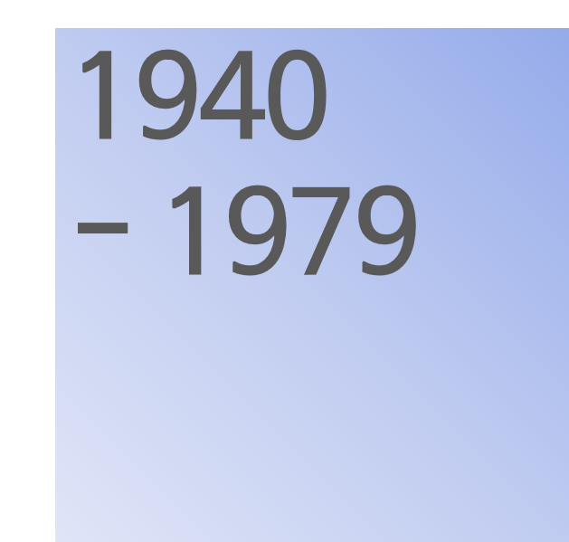
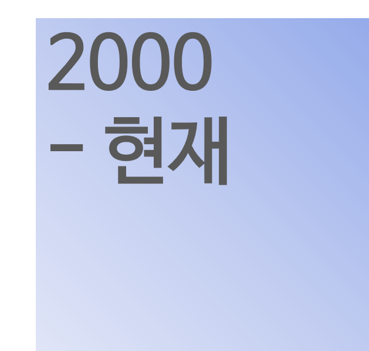

|
연혁
|
||
|

|
1947. 04. 01
1948. 04. 15 1948. 05. 08 1951. 10. 10 1953. 04. 04 1954. 05. 01 1954. 10. 05 1955. 04. 10 1955. 12. 06 1957. 01. 16 1958. 12. 21 1959. 04. 12 1960. 08. 07 1960. 08. 1960. 10. 21 1960. 11. 05 1964. 05. 08 1965. 01. 10 1966. 04. 1967. 04. 11 1967. 09. 28 1974. 12. 20 |
덕진교회에서 임민순 장로(시천교회로 이적) 임규순 집사 분립
예수교 장로회 신상교회 설립 초대 당회장 황희섭 목사 이진희 전도사 부임 이종열 전도사 부임 김기만 전도사 부임 제2대 당회장 조용태 목사 취임 “한국기독교장로회” 신상교회 구 신상교회당 신축 박광재 목사 부임 강태식 전도사 부임 초대 장로 정일남 장로 장립(덕진 중앙 교회로 이적) 임규순 이영국 안수집사 제3대 당회장 황희섭 목사 취임 제4대 당회장 강태식 목사 취임 김기만 전도사 부임 제5대 당회장 백윤석 목사 취임 제2대 장로 임규순 장로 장립 제3대 장로 이영국, 임성도 장로 장립 (이영국 장로는 북전주교회로 임성도 장로는 팔복산교회로 이적) 제6대 당회장 김세열 목사 취임 제7대 당회장 정진철 목사 취임 제8대 당회장 백윤석 목사 취임 전 성전 건축 제4대 장로 윤학주 이완수 이광수 최영상 장로 장립 (윤학주 최영상 장로 북전주교회로 이적) |
|
1981. 06. 29
1982. 03. 11 1983. 12. 11 1984. 11. 30 1985. 01. 10 1985. 05. 08 1986. 10. 05 1987. 07. 18 1988. 03. 06 1988. 04. 27 1990. 01. 01 1991. 01. 01 1993. 04. 18 1993. 07. 11 1993. 11. 07 1996. 01. 01 1996. 03. 01 1997. 04. 01 1998. 05. 10 1998. 12. 10 1999. 11. 01 1999. 11. 28 |
김용환 목사 부임
제9대 당회장 김동방 목사 취임 초대권사: 손대리, 임금녀, 최복희, 이언련, 김춘화 김경신, 이귀례, 이수덕, 이재명, 홍오목 조종순 권사취임 제5대 장로 박근철 허일권 임병근 장로 장립 안강순 부목사 부임 임규순 장로 원로장로 추대 현 성전 건축 시작 현 성전 393평 완공 제10대 당회장 안강순 목사 취임, 김동방 목사 퇴임 이완수 이광수 장로 14주년 장로 근속 제2대 권사: 이점님 이말만 양이순 소정남 박보배 권사취임. 정길복 명예권사 추대 정안석 전도사 (~1989. 04 사임) 오경재 전도사 (~1993. 04. 04 사임) 송헌숙 전도사 부임(~2006. 03 사임) 박경미 전도사 (~1992. 12. 30 사임) 신솔문 전도사 (~1996. 01. 15 사임) 제3대 권사: 최복례 양차남 김경님 조경애 이순애 홍윤표 방명순 정인숙 김순덕 박덕순 김순례 이영자 권사취임 조영주 전도사 (~1995. 04. 04 사임) 최영규 목사 (~1998. 10. 11 사임) 서덕운 전도사 (~1998. 10. 11 사임) 본 교회 창립 50주년 기념 구자은 전도사 부임 (~1999. 10. 31 사임) 박 산 전도사 부임 (2001. 03. 14 목사안수, 2003. 01. 19 사임) 전성일 준목 부임 (~2002. 06. 03 사임) 제6대 장로 신효균 조용환 장로 장립, 이완수 장로 원로장로 추대 |
|
|

|
2003. 01. 02
2003. 11. 02 2003. 12. 31 2004. 11. 30 2006. 04. 29 2006. 07. 2006. 09. 24 2008. 03. 16 2008. 04. 27 2008. 05. 03 2008. 12. 31 2010. 01. 03 2013. 01. 06 2014. 04. 27 |
남성수 전도사 부임(~2004. 12. 31 사임)
제7대 장로 오내곤 김기선 장로 장립 이광수 장로 원로장로 추대 제4대 권사 : 김덕순 김도자 김민태 김순희 나효순 노정진 류길순 류연수 문정의 박양순 박영례 서정옥 송영자 송영희 송순희 염춘자 유보임 이순이 이영숙 이정녀 이정숙 임원재 정혜숙 최길자 최영례 최점례 한명자 권사취임 김종례 유입분 명예권사 추대 허일권 장로 원로장로 추대 안강순 목사 퇴임 제11대 당회장 황은종 목사 취임 최회석 부목사 부임(~2007. ) 황은종 목사 사임 박용호 목사 부임 장왕기 전도사 부임(~2009.10.25) 제12대 당회장 박용호 목사 취임 박근철 장로 원로장로 추대 박용준 전도사 부임(2012.3. 목사 안수, 2016.10.30. 사임) 최덕호 전도사 부임(2015.3. 목사 안수, 2015.11.29. 사임) 임병근 장로 원로장로 추대 제5대 권사: 강복자 강영금 권일순 김강순 김동엽 김봉임 김선화 김숙자 김춘자 김향순 김홍숙 나순자 박경자 박봉선 박점순 변재순 서경순 송명숙 송명순 송옥희 신동분 심학자 양순이 유봉덕 유형순 윤예순 이순임 이연순 이영례 이종순 이진자 임은숙 정인순 조병님 조정순 채미정 채은정 최경자 최분순 최선순 최영숙 최윤옥 한광순 홍두순 황정임 명예권사 추대: 곽정임 김정순 김진순 박지동 유야모 윤원달 이공덕 이순덕 천옥남 홍귀순 |